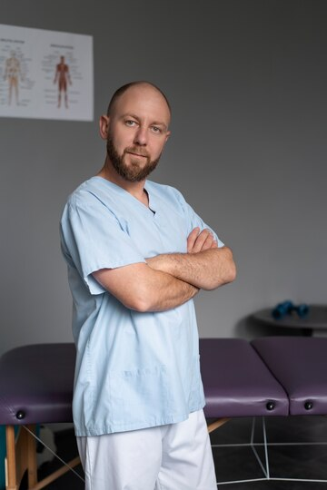

Есть 12 методов избавления от боли в спине
1
Мануальная терапия
2
Остеопатия
3
Блокады
4
Капельницы
5
Кинезиотейпирование
6
Массаж
7
Физиотерапия
8
Рефлексотерапия
9
Ортезирование
10
Ботулинотерапия
11
Лечебная физкультура
12
Пилатес
В вашем случае будет подобрана персональная программа
Что еще для вас может быть важно
В клинике ведётся полное оформление всей необходимой медицинской документации - полное ведение справок и выписок истории болезни.
Для вас это означает всегда доступные данные о лечении для предъявления куда бы то ни было, и вы точно знаете свой диагноз - он задокументирован в понятном и официальном виде по международной классификации болезней.
Выдаём больничные листы
Ведём приём детей
Работаем с беременными вплоть до 9 месяца
Имеется парковка

Комфортные помещения с кондиционером
График: 7 дней
в неделю с 9 до 21 (воскресенье до 18)
Оформляем выписки
и справки в налоговую
за наши услуги
для вычетов
Автоматически оповестим ФСС,
что вы на больничном
Напомним вам
о времени записи
на приём через
СМС
Для более выгодного
и экономного лечения имеются
Для вашего удобства есть подарочные сертификаты для заботы о близких и программы семейного обслуживания. Это поможет вам быстро, комфортно, выгодно и без осложнений получить значительное облегчение уже после первого сеанса.
При полном и добросовестном прохождении полного курса с дальнейшей стабилизацией, вы станете полностью здоровым человеком, сможете взять ребёнка на руки, много путешествовать и гулять без болей.
Планы лечения
и депозиты
с дополнительными услугами за счёт клиники
Система кэшбеков
и вознаграждения
за рекомендации
Бонусы и подарки лояльным клиентам

И помните!
Откладывать "на потом" очень невыгодно, ни по деньгам,
ни по времени. Может понадобиться больше сеансов, лечение будет сложнее и, возможно, только хирургически
* Исключения, когда мы вынуждены отправить
вас для дополнительной диагностики в другие места:
- Остиоденситометрия (плотность костной ткани для исключения остеопороза)
- Обзорная рентгенография нижних конечностей (для определения причины в разнице длинн ног)
Алексей Попов